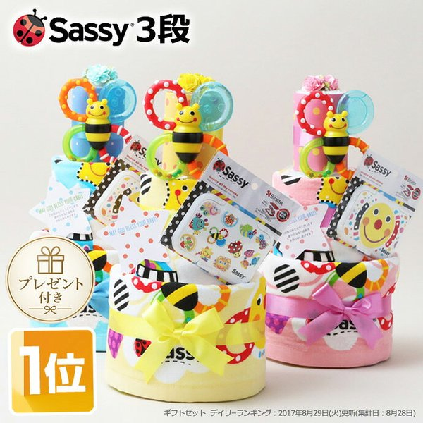
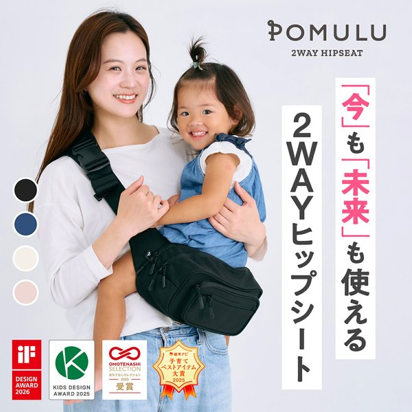
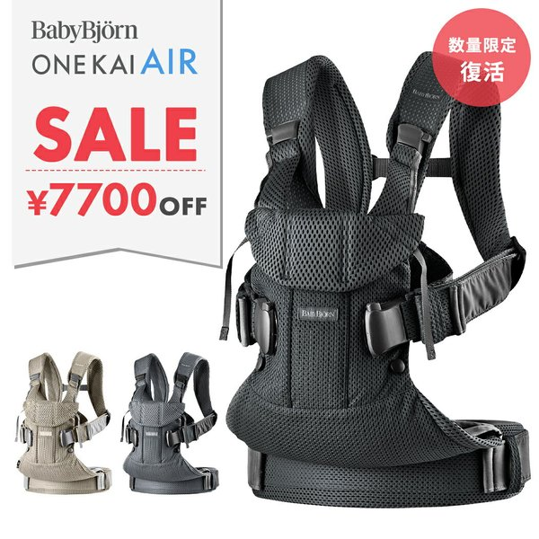
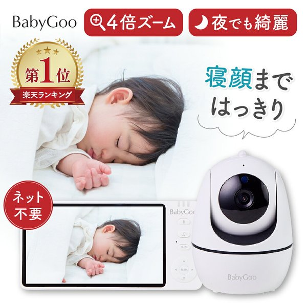
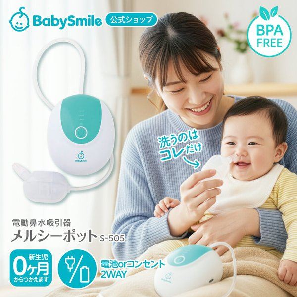
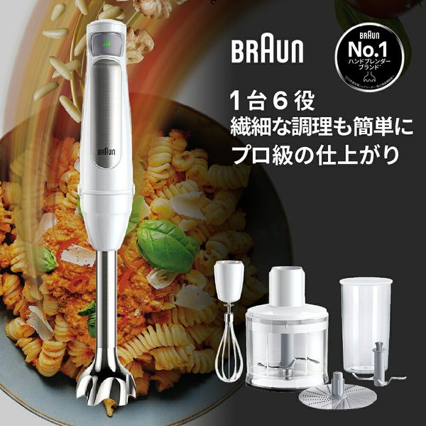
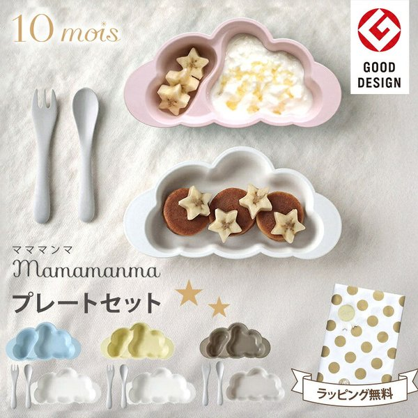
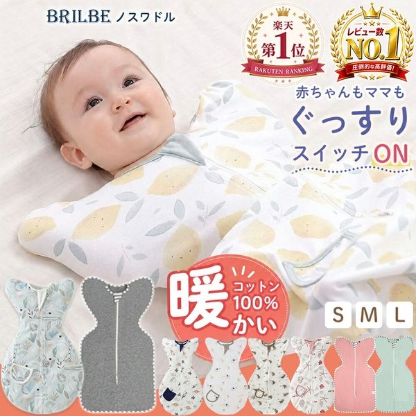
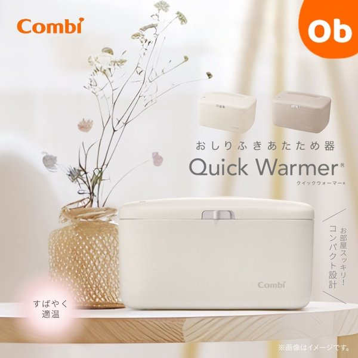
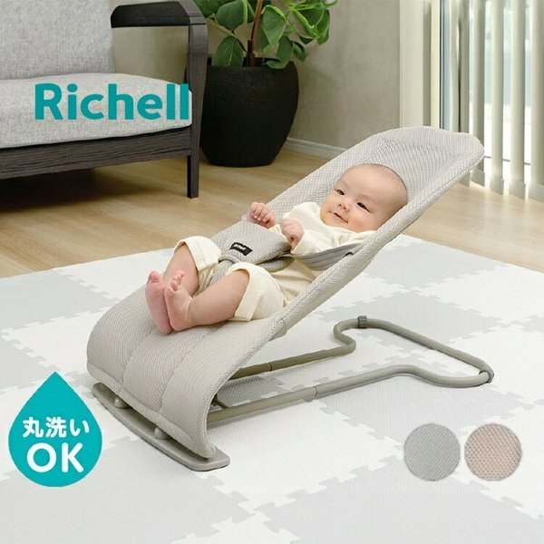

【2026年・出産祝い10選】おむつケーキ3段Sassy・POMULU ヒップシート・ベビービョルン ONE KAI Air・BabyGoo ベビーモニター・メルシーポット S-505・ブラウン マルチクイック7・10mois プレートセット・BRILBE スワドル・Combi クイックウォーマー・リッチェル バウンサーを実売価格で比較
出産祝いは、相手が自分では買わないものを選ぶと喜ばれます。おむつやタオルは自分で揃えるものなので、形やブランドが違うもの、使う時期が先のものが残ります。
選ぶ軸は3つです。まず贈る相手。第1子なら何でも重宝しますが、第2子は家にあるものが多いので、サイズや色で差が出るものにします。次に使う時期。新生児から使うものと、7ヶ月を過ぎてから使うものでは、渡すタイミングが変わります。最後に置き場所。バウンサーやベビーモニターは、相手の部屋の広さを考えてから選びます。
本記事では、楽天市場で人気・高評価の出産祝い・育児グッズ10選を、実売価格とレビュー評価つきで写真付き紹介します。
- おすすめ10選 スペック・特徴比較表
- BEST 1｜おむつケーキ 3段 Sassy 身長計付き バスタオル・ラルフローレン ベビーソックス付き
- BEST 2｜POMULU ポムル 2WAY ヒップシート 抱っこバッグ
- BEST 3｜ベビービョルン 抱っこ紐 ONE KAI Air ワンカイエアー
- BEST 4｜BabyGoo ベビーモニター 5インチモニター付き 暗視対応
- BEST 5｜ベビースマイル メルシーポット S-505 電動鼻水吸引器
- BEST 6｜ブラウン マルチクイック7 ハンドブレンダー MQ7035IGWH
- BEST 7｜10mois マママンマ プレートセット ベビー食器
- BEST 8｜BRILBE スワドル おくるみ 綿100％ 通年用
- BEST 9｜コンビ クイックウォーマー おしりふきウォーマー
- BEST 10｜リッチェル バウンシングシートN メッシュ バウンサー
- 【読者負担0円】買わなくても得する無料サービス
- まとめ：出産祝い・育児グッズ10選の選び方
| 順位 | 商品名 | ブランド | 最大の特徴・おすすめ理由 | 総合評価 |
|---|---|---|---|---|
| BEST 1 | おむつケーキ 3段 Sassy 身長計付き バスタオル・ラルフローレン ベビーソックス付き | おむつケーキ研究所 | 名前入りで贈れる | 4.71 |
| BEST 2 | POMULU ポムル 2WAY ヒップシート 抱っこバッグ | POMULU（ポムル） | 抱っこ紐とバッグを兼ねる | 4.56 |
| BEST 3 | ベビービョルン 抱っこ紐 ONE KAI Air ワンカイエアー | ベビービョルン（BabyBjörn） | 新生児から使える | 4.69 |
| BEST 4 | BabyGoo ベビーモニター 5インチモニター付き 暗視対応 | BabyGoo | Wi-Fiなしで使える | 4.65 |
| BEST 5 | ベビースマイル メルシーポット S-505 電動鼻水吸引器 | ベビースマイル（BabySmile） | 0ヶ月から使える | 4.66 |
| BEST 6 | ブラウン マルチクイック7 ハンドブレンダー MQ7035IGWH | ブラウン（Braun） | 離乳食のつぶし作業が短くなる | 4.58 |
| BEST 7 | 10mois マママンマ プレートセット ベビー食器 | ディモワ（10mois） | プレートと小皿が揃う | 4.80 |
| BEST 8 | BRILBE スワドル おくるみ 綿100％ 通年用 | BRILBE | モロー反射で起きにくくなる | 4.60 |
| BEST 9 | コンビ クイックウォーマー おしりふきウォーマー | コンビ（Combi） | 冬のおむつ替えが冷たくない | 4.50 |
| BEST 10 | リッチェル バウンシングシートN メッシュ バウンサー | リッチェル（Richell） | メッシュ生地で洗える | 4.56 |
おむつケーキ 3段 Sassy 身長計付き バスタオル・ラルフローレン ベビーソックス付き

おむつを3段に重ねてケーキの形に仕立てたギフトです。Sassyの身長計、バスタオル、ラルフローレンのベビーソックスが付き、名前入りの刺繍にも対応しています。飾ったあとはおむつやタオルとして使えます。楽天市場での実売価格は約5,500円（2026年11月時点）。
- 名前入りで贈れる
- おむつとタオルが実用品として残る
- 身長計付きで記念になる
- 中身がおむつとタオルなので、同じものが既に揃っている家庭には重なる
POMULU ポムル 2WAY ヒップシート 抱っこバッグ

POMULUのヒップシート付き抱っこバッグです。腰に巻いて子供を座らせる2WAYタイプで、抱っこ紐とバッグの両方に使えます。20kgまで対応し、おむつや財布を入れるポケットが付いています。楽天市場での実売価格は約11,900円（2026年11月時点）。
- 抱っこ紐とバッグを兼ねる
- 20kgまで対応
- 腰に固定するので両手が空く
- 荷物を入れるほど重くなるので、長時間の外出では肩に負担が残る
ベビービョルン 抱っこ紐 ONE KAI Air ワンカイエアー

ベビービョルンのベビーキャリアです。メッシュ素材で通気性がよく、新生児から対面・前向き・おんぶの3通りで使えます。1人で着脱できる構造で、10年保証が付いています。楽天市場での実売価格は約19,800円（2026年11月時点）。
- 新生児から使える
- メッシュで蒸れにくい
- 1人で着脱できる
- 価格が高めなので、使う期間を考えてから決めたい
BabyGoo ベビーモニター 5インチモニター付き 暗視対応

BabyGooのモニター付きベビーモニターです。Wi-Fiやスマホがなくても、付属の5インチ画面に映像が映ります。暗い部屋でも見える暗視モードがあり、寝ている子の様子を別の部屋から確認できます。楽天市場での実売価格は約8,980円（2026年11月時点）。
- Wi-Fiなしで使える
- 5インチ画面ではっきり見える
- 暗視モード付き
- モニターとカメラの間は、電波が届く範囲で使う必要がある
ベビースマイル メルシーポット S-505 電動鼻水吸引器

ベビースマイルの電動鼻水吸引器です。鼻水を吸い取る器具で、0ヶ月の赤ちゃんから使えます。チューブ式なので、機械の音が耳元で大きく響かず、嫌がる子にも使いやすい形です。楽天市場での実売価格は約7,980円（2026年11月時点）。
- 0ヶ月から使える
- 電動で片手で吸引できる
- 部品を洗って繰り返し使える
- 本体とチューブの洗浄に手間がかかる
ブラウン マルチクイック7 ハンドブレンダー MQ7035IGWH

ブラウンのハンドブレンダーです。離乳食づくりに使う人が多く、刻む・混ぜる・泡立てるのアタッチメントが付いています。鍋に直接入れてつぶせるので、裏ごしの手間が減ります。楽天市場での実売価格は約12,800円（2026年11月時点）。
- 離乳食のつぶし作業が短くなる
- アタッチメントを替えて用途を広げられる
- 鍋に直接入れられる
- 本体が太めなので、小さな容器には入れにくい
10mois マママンマ プレートセット ベビー食器

10moisのベビー食器セットです。雲の形のプレートと小皿、カトラリーが揃い、離乳食から幼児食まで使えます。電子レンジと食洗機に対応し、出産祝いのラッピングにも向いています。楽天市場での実売価格は約4,400円（2026年11月時点）。
- プレートと小皿が揃う
- 電子レンジ・食洗機対応
- 出産祝いの包みに向く
- デザインがかわいいぶん、食器棚で場所を取る
BRILBE スワドル おくるみ 綿100％ 通年用

BRILBEのおくるみです。手足を包む形で、赤ちゃんのモロー反射で起きてしまうのを抑えます。綿100％で通年使える厚さ。手を出せるタイプなので、寝返りを始めたころまで使えます。楽天市場での実売価格は約1,772円（2026年11月時点）。
- モロー反射で起きにくくなる
- 綿100％で肌当たりがやさしい
- 通年使える
- サイズアウトが早く、生後数か月で使えなくなる
コンビ クイックウォーマー おしりふきウォーマー

コンビのおしりふきウォーマーです。おしりふきを入れて温めておくと、冬の夜の交換でも冷たくありません。ケースごと替えられるので、おしりふきが少なくなったら新しいものを入れられます。楽天市場での実売価格は約4,480円（2026年11月時点）。
- 冬のおむつ替えが冷たくない
- ケースごと入れ替えられる
- 出産祝いの定番
- 温めるぶん、コンセントの近くに置く必要がある
リッチェル バウンシングシートN メッシュ バウンサー

リッチェルのバウンサーです。メッシュ生地で洗え、使わないときは折りたためます。赤ちゃんの体重で揺れる構造なので、寝かしつけのときにゆらゆらと揺れます。楽天市場での実売価格は約9,980円（2026年11月時点）。
- メッシュ生地で洗える
- 折りたたんでしまえる
- 新生児から使える
- 電動で揺れる式ではないので、泣き止まないときは手で揺らす必要がある
この記事の商品を買う前に、まずは無料で得する選択肢をチェック。どれも登録・利用は0円で、無料期間中に解約すれば料金はかかりません。読みたい雑誌がある人、ポイントを貯めたい人、アンケートなら気軽という人、それぞれに合うものを選べます。
初回31日無料・無料期間中に解約すれば0円 → 楽天ポイントモール｜登録無料で毎日ポイ活
買い物なしでもポイントが貯まる無料サービス → 楽天インサイト｜アンケートに答えてポイント
登録無料・すきま時間のアンケートで貯まる → 楽天カード｜年会費永年無料
新規発行・年会費ずっと0円 →
4つのサービスの違いと使い分けは「出費0円で得する！買わずにポイントが貯まる無料サービス厳選4選」でまとめています。
💡 まとめ：出産祝い・育児グッズ10選の選び方
出産祝いは、渡す相手と使う時期で選ぶと外しません。形で残すならおむつケーキ3段のSassy、持ち運びを軽くするならPOMULUのヒップシート、長く使う抱っこ紐ならベビービョルン ONE KAI Air。寝ている間の見守りはBabyGooのベビーモニター、風邪の季節の鼻水はメルシーポット S-505。離乳食はブラウンのマルチクイック7と10moisのプレートセット、寝かしつけはBRILBEのスワドルとリッチェルのバウンサー、冬のおむつ替えはCombiのクイックウォーマー。1つ贈るなら、相手がまだ持っていない半年後から使うものを選ぶと、長く覚えてもらえます。
楽天市場では「5と0のつく日」や「お買い物マラソン」などのキャンペーンに合わせて購入すると、ポイント還元が最大化してお得に手に入ります。ぜひチェックしてみてくださいね。